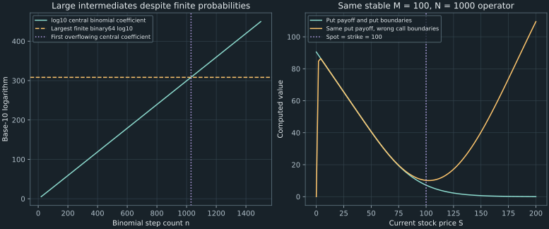

18. A reproducible option-pricing laboratory
The paired laboratories price the same European call by a terminal binomial sum, the Black–Scholes formula, and an explicit pricing grid. For $S=K=100$, $r=0.1$, $\sigma=0.3$, and one year remaining, the analytic model value is 16.734133582. The interesting lessons come from the failures: a naive binomial implementation breaks near a thousand steps, and a put obtained by changing only the payoff can give a plausible but wrong answer.
We reproduce the complete R/Python workflow, replace an overflowing intermediate calculation, map mathematical indices into each language, and isolate a boundary-condition defect with all other inputs held fixed. The pricing proofs are in Chapters 8, 16, and 17; here the task is to make their computational contracts survive actual code.
Source spine: recording 52, the R option-pricing laboratory, and recording 53, the paired Python laboratory. Both recordings are covered in full. The logarithmic terminal implementation, controlled failure experiments, and diagnostic figures are original elaborations. Observed notebook failures motivate the experiments; the unavailable original execution trace is not treated as a verified root-cause record.
18.1 Make a fresh run the unit of reproduction Recording 52, 4:13
Declare one contract before comparing algorithms: a European expiry-only call or put, non-dividend stock, constant continuously compounded annual rate, constant volatility per square root of a year, and a horizon measured in years. Keep $S=100$, $K=100$, $r=0.1$, $\sigma=0.3$, and $T=1$ fixed while changing numerical resolution. A changed maturity, payoff, boundary convention, or rate interpretation would be a different comparison.
In a notebook, run imports first, then function definitions and payoffs, then model inputs, then numerical experiments and checks. Restarting and running from the top removes accidental dependence on a function or variable left over from an earlier session. Recording 52 restarts the kernel; recording 53 encounters an undefined function after skipping its defining cell. A saved output alone does not establish that a fresh session can reproduce it.
The public companion is a script that prints its inputs' results and executes its checks from a clean start. It uses NumPy and Python's standard mathematical library, importing the already reviewed pricing helpers. The source Python demonstration uses SciPy combination/CDF functions; their documented semantics are discussed below without claiming an unperformed SciPy run. The R translations are also explicitly documentary, rather than outputs attributed to a locally executed R interpreter.
The lecture avoids naming a horizon T in R. More precisely, TRUE and FALSE are reserved logical constants, whereas T and F are ordinary global variables initially set to them and can be rebound. A name such as horizon avoids that ambiguity; it is not necessary because the letter T is itself a reserved keyword. The distinction is specified in the official R logical-vector documentation.
18.2 Turn the terminal payoff into a vector expectation Recording 52, 1:43 Recording 53, 2:10
For $n$ CRR periods, set $h=T/n$, $u=e^{\sigma\sqrt h}$, $d=e^{-\sigma\sqrt h}$, and $q=(e^{rh}-d)/(u-d)$. Strict no arbitrage requires $d<e^{rh}<u$, giving $0<q<1$. A path with exactly $j$ up moves ends at $s_j=S_0u^jd^{n-j}$. There are $\binom nj$ paths with that count, each with pricing weight $q^j(1-q)^{n-j}$. Therefore the terminal count has mass $p_j=\binom njq^j(1-q)^{n-j}$.
The $n+1$ terminal states are indexed $j=0,\ldots,n$. In Python, np.arange(n + 1) includes all of them; np.arange(n) omits the all-up endpoint. In R, 0:n supplies the intended integer sequence for a validated positive integer count. Array shape and index endpoints are part of the numerical model.
Form the payoff vector componentwise: $g_j=(s_j-K)_+$ for a call or $(K-s_j)_+$ for a put. Then
\[ V_n=e^{-rT}\sum_{j=0}^np_jg_j.\tag{18.1} \]Multiplication is elementwise before summation. Python's np.maximum and R's pmax perform the required parallel maximum. A scalar reducing maximum would instead combine entries and destroy the terminal-state mapping. On a scalar payoff callback, a scalar maximum is appropriate; the required operation depends on the argument's shape.
Equation (18.1) is the Chapter 8 replication price written as a terminal distribution. It uses pricing weights, not an estimated historical up probability. For a payoff depending only on terminal stock, it requires $O(n)$ terminal contributions instead of $O(n^2)$ rollback work. It cannot directly price an American right, whose conditional exercise decisions occur before expiry, or a path statistic omitted from $s_j$.
Recalculate the full paired laboratory table
The executed logarithmic implementation developed below gives:
| Steps $n$ | Call | Put |
|---|---|---|
| 3 | 17.520959305 | 8.004701109 |
| 30 | 16.635296515 | 7.119038319 |
| 300 | 16.724211104 | 7.207952907 |
| 1000 | 16.731155969 | 7.214897773 |
| 1200 | 16.731652186 | 7.215393990 |
| 1500 | 16.732148424 | 7.215890228 |
| 5000 | 16.733538000 | 7.217279804 |
The first four resolutions reproduce the substantive source experiment with computed values rather than copied truncated narration. The last three show that a binomial model does not inherently stop working at a thousand periods. The closed-form continuous-model values are 16.734133582 and 7.217875386. The finite-tree prices differ because the terminal law is still discrete, even when the arithmetic is functioning correctly.
Exact finite-tree parity gives $C_n-P_n=S_0-Ke^{-rT}$: subtracting the two payoffs leaves $s_j-K$, whose pricing expectation is $S_0e^{rT}-K$. This checks a relation between two computations, while the reported probability-mass sum and independent rollback checks test additional parts of the implementation. A price that merely looks close to a lecture's rounded output is weaker evidence.
18.3 Diagnose a large intermediate before blaming a fine grid Recording 52, 8:23 Recording 53, 12:17
Both demonstrations encounter a failed terminal calculation after increasing the period count beyond about a thousand. The narration suggests that the up/down factors have become too close. At $n=1200$ for these inputs, however, $u-d=0.017320724583$. They remain distinct numbers near one, far from floating-point indistinguishability. A small time step is not, by itself, an explanation of this observed failure.
Consider the independently reproducible floating implementation that forms each binomial coefficient, then multiplies it by the two probability powers and payoff. At $n=1200$, the central coefficient has base-10 logarithm 359.598253757. It cannot fit into binary64, whose largest finite value is about $1.8\times10^{308}$. The final binomial mass is nevertheless between zero and one because the probability powers compensate for the enormous coefficient. Evaluating the large and small factors separately can lose that cancellation of scales.
| $n$ | $\log_{10}\binom n{\lfloor n/2\rfloor}$ | Fits finite binary64? |
|---|---|---|
| 1000 | 299.431827152 | Yes |
| 1020 | 305.448129108 | Yes |
| 1029 | 308.155281576 | Yes |
| 1030 | 308.456311572 | No |
| 1200 | 359.598253757 | No |
| 1500 | 449.858815546 | No |
Python's math.comb first produces an exact arbitrary-size integer; converting an overrange result to an ordinary float raises an overflow error. The companion's deliberately naive diagnostic represents such overrange coefficients as infinity to expose what happens in a floating array calculation. It then obtains nonfinite expected-payoff outputs at 1030, 1200, and 1500 steps. Infinity multiplied by a zero payoff or an underflowed factor can produce NaN; merely catching or hiding that value would not recover a price.
The source Python function uses scipy.special.comb. Its official interface defaults to exact=False, which uses floating-point values; exact array coefficients are not supplied by that mode. Asking for exact integers alone would also leave the subsequent multiplication by floating probabilities to be addressed. The entire expression's arithmetic matters.
This experiment establishes a concrete failure mechanism consistent with the displayed formula and range of counts. It does not recover the original notebook's first failing operation or historical error trace. Conversely, agreement at 1000 steps does not establish that every larger-step failure is caused by roundoff or that finer CRR models are invalid. The representation should be diagnosed and repaired before drawing that conclusion.
18.4 Keep the combined contribution in logarithmic form
For a terminal count, compute the log mass instead of its enormous combinatorial factor:
\[ \lambda_j=\log\Gamma(n+1)-\log\Gamma(j+1)-\log\Gamma(n-j+1) +j\log q+(n-j)\log(1-q).\tag{18.2} \]The gamma identity $\Gamma(m+1)=m!$ for nonnegative integers establishes this formula. The implementation uses lgamma and log1p(-q). It does not first exponentiate the binomial coefficient or multiply separately underflowing probability powers.
Let $x_j=\log(s_j/K)$. For an in-the-money call, $g_j=K e^{x_j}(1-e^{-x_j})$; for an in-the-money put, $g_j=K(1-e^{x_j})$. Thus
\[ \log g_j= \begin{cases} \log K+x_j+\log(1-e^{-x_j}),&\text{call},\ x_j>0,\\ \log K+\log(1-e^{x_j}),&\text{put},\ x_j<0. \end{cases}\tag{18.3} \]Use -expm1(-x_j) or -expm1(x_j) for the positive small differences in these expressions. Zero-payoff terms contribute nothing and are omitted rather than passed to a logarithm. The mathematical expression $x_j=\log(S_0/K)+(2j-n)\sigma\sqrt{T/n}$ also avoids constructing extreme terminal stock levels merely to subtract the strike.
Shift before exponentiating the sum
For positive-payoff nodes, set $z_j=\lambda_j+\log g_j$ and $m=\max_jz_j$. Then
\[ \log V_n=-rT+m+\log\sum_j e^{z_j-m}.\tag{18.4} \]Each shifted exponential is at most one and at least one equals one. The summation therefore avoids overflow from a single large positive exponent and unnecessary loss from uniformly tiny contributions. The companion uses math.fsum for this nonnegative shifted sum and exponentiates the final log price. If every finite-tree payoff is zero, it returns zero directly through the empty-sum convention.
The same procedure applied to all $\lambda_j$ reports the total probability mass. It is not silently rescaled to one, since normalization could hide an error in a probability calculation. At 5000 steps the observed sum is 1.000000000001478, exposing its ordinary floating-point difference from the mathematical mass one.
Validate the repair without promising unlimited accuracy
The complete companion compares the terminal method with independent rollback at 3, 30, 300, and 1000 steps, and checks call–put parity at all seven table resolutions. A separate 80-digit calculation starts from $(1-q)^n$ using arbitrary-exponent arithmetic and generates successive probabilities by $p_{j+1}/p_j=[(n-j)/(j+1)]q/(1-q)$. It therefore checks the ordinary log-gamma implementation with a different arithmetic route. Across the table's call and put cases, the largest observed absolute difference is about $2.53\times10^{-11}$ price units.
This is finite numerical evidence, not an interval-certified bound or a recommendation to use the same formula for arbitrarily large $n$. Subtracting three large log-gamma values can itself lose significant digits as the count grows. Loader (2002), pp.1–3, explains that limitation and develops a more accurate binomial-probability algorithm. Our teaching implementation does not implement that full algorithm or claim its large-count guarantees. The repair solves the demonstrated overflow problem over the tested range while retaining a stated numerical scope.
18.5 Translate the terminal method into R without copying the overflow
For the declared positive scalar inputs and integer $n\geq1$, R's dbinom(j, size=n, prob=q, log=TRUE) supplies log masses directly. The official binomial-distribution documentation specifies the vector interface, log option, and Loader-based probability calculation. This avoids constructing choose(n,j) as a separate floating factor. It is a library-based counterpart to the portable Python teaching implementation, not a claim that the two probability algorithms are identical.
The following complete R translation uses logarithmic payoffs too. Its model contract is moderate positive scalar stock, strike, volatility and horizon, a finite scalar continuously compounded rate, and a positive integer period count. The shown checks enforce the numerical domain for those intended scalar inputs. The return value reports both price and probability mass.
euro_terminal <- function(spot, strike, rate, sigma, horizon, n,
kind = "call") {
stopifnot(all(is.finite(c(spot, strike, rate, sigma, horizon, n))),
spot > 0, strike > 0, sigma > 0, horizon > 0,
n >= 1, n == floor(n), length(kind) == 1,
kind %in% c("call", "put"))
dt <- horizon / n
shock <- sigma * sqrt(dt)
up <- exp(shock)
down <- exp(-shock)
growth <- exp(rate * dt)
stopifnot(down < growth, growth < up)
q <- (growth - down) / (up - down)
stopifnot(is.finite(q), q > 0, q < 1)
j <- 0:n
log_mass <- dbinom(j, size = n, prob = q, log = TRUE)
x <- log(spot / strike) + (2 * j - n) * shock
keep <- if (kind == "call") x > 0 else x < 0
mass <- sum(exp(log_mass))
if (!any(keep)) return(list(price = 0, probability_mass = mass))
if (kind == "call") {
log_pay <- log(strike) + x[keep] + log(-expm1(-x[keep]))
} else {
log_pay <- log(strike) + log(-expm1(x[keep]))
}
z <- log_mass[keep] + log_pay
largest <- max(z)
value <- exp(-rate * horizon + largest + log(sum(exp(z - largest))))
list(price = value, probability_mass = mass)
}
demo <- euro_terminal(100, 100, 0.1, 0.3, 1, 1200, "call")This listing is a semantically checked translation, not a locally executed R result. In particular, the Python table's digits are not attributed to demo. Both implementations embody (18.1), but different mass algorithms and ordinary summation can produce slightly different low-order digits. The familiar vector-payoff version may instead use pmax(terminal - strike, 0) on moderate terminal values; the log-payoff form additionally avoids subtracting nearly equal stock/strike values after exponentiation.
When translating a numerical idea, preserve the contract rather than each low-level intermediate. Here the indispensable objects are terminal states, pricing masses, payoff alignment, discounting, and a numerical representation that can evaluate their combined contributions. Copying an overflowing coefficient calculation would preserve the source syntax while losing its intended expectation.
18.6 Use the closed formula as a benchmark with the same inputs Recording 52, 7:05 Recording 53, 9:51
Chapter 16 derived $d_1=[\log(S/K)+(r+\sigma^2/2)T]/(\sigma\sqrt T)$, $d_2=d_1-\sigma\sqrt T$, and $C=S\Phi(d_1)-Ke^{-rT}\Phi(d_2)$. Here time starts at zero, so the remaining horizon is written $T$. The put follows from $P=C-S+Ke^{-rT}$, or from its own formula. Parentheses around the drift sum and its multiplication by the horizon matter.
A compact R counterpart for the declared positive interior inputs is:
bs_price <- function(spot, strike, rate, sigma, horizon, kind = "call") {
stopifnot(all(is.finite(c(spot, strike, rate, sigma, horizon))),
spot > 0, strike > 0, sigma > 0, horizon > 0,
length(kind) == 1, kind %in% c("call", "put"))
scale <- sigma * sqrt(horizon)
d1 <- (log(spot / strike) + (rate + sigma^2 / 2) * horizon) / scale
d2 <- d1 - scale
discounted_strike <- strike * exp(-rate * horizon)
call <- spot * pnorm(d1) - discounted_strike * pnorm(d2)
if (kind == "call") call else call - spot + discounted_strike
}This is a documentary R translation. The R normal-distribution documentation specifies pnorm as the CDF with default mean zero and standard deviation one. The executable Python companion imports the reviewed Chapter 16 formula and obtains call 16.734133582387 and put 7.217875385983. “Closed form” means that the model supplies this mathematical expression; an ordinary library evaluation of it still uses floating arithmetic. It is not literally exact real-number computation, and it is not evidence that the constant-volatility model fits an observed stock.
The normal CDF is applied to standardized coordinates. In particular, $\Phi(d_2)$ is the pricing exercise probability, while $\Phi(d_1)$ is the call delta. The two CDF factors should not both be described as the probability that the stock is below the same unspecified threshold. Chapter 16's Gaussian tilt explains why their arguments differ.
At 1000 steps, the binomial call is 16.731155969; the analytic value is 16.734133582. Their agreement to two decimal places is a useful benchmark observation, but it leaves a finite numerical/model-discretization difference. Check the unrounded values, parity and probability mass before declaring a computation converged for a particular accuracy target.
18.7 Translate the full grid and its boundaries together Recording 52, 10:55 Recording 53, 13:42
The source implementations store a full stock-by-calendar-time matrix, with $M+1$ rows and $N+1$ columns. Let $S_i=i\Delta S$, $t_j=j\Delta t$, $\Delta S=S_{\max}/M$, and $\Delta t=T/N$. Initialize the terminal column from the payoff, set the two boundary rows at every time, then compute earlier columns from later ones. This is the same recurrence as Chapter 17 with remaining-time index $k=N-j$.
| Object | Mathematical index | Python subscript | R subscript |
|---|---|---|---|
| Zero-stock row | $i=0$ | 0 | 1 |
| Upper-stock row | $i=M$ | M | M + 1 |
| Terminal column | $j=N$ | N | N + 1 |
| Current calendar-time column | $j=0$ | 0 | 1 |
For the update of mathematical node $(i,j)$, the known neighbors are $(i-1,j+1)$, $(i,j+1)$, and $(i+1,j+1)$. Their R subscripts are respectively [i, j+2], [i+1, j+2], and [i+2, j+2], while the destination is [i+1, j+1]. Python uses the mathematical integer indices directly. A descending loop must include column zero: range(N - 1, -1, -1) in Python.
A complete R grid translation with the contract tied to its boundaries
The following moderate-input European translation retains the full matrix for inspection. It uses Chapter 17's local positive-drift repair and checks all explicit weights. This code is documented and semantically checked, but not locally executed as R.
euro_grid <- function(strike, rate, sigma, horizon, smax, m,
n = NULL, kind = "call") {
stopifnot(all(is.finite(c(strike, rate, sigma, horizon, smax, m))),
strike > 0, rate >= 0, sigma > 0, horizon > 0,
smax > strike, m >= 3, m == floor(m),
length(kind) == 1, kind %in% c("call", "put"))
ds <- smax / m
stock <- (0:m) * ds
i <- 1:(m - 1)
diffusion <- sigma^2 * i^2 / 2
lower <- diffusion - rate * i / 2
upper <- diffusion + rate * i / 2
repair <- lower < 0
lower[repair] <- diffusion[repair]
upper[repair] <- diffusion[repair] + rate * i[repair]
diagonal <- -lower - upper - rate
if (is.null(n)) n <- max(1, ceiling(horizon * max(-diagonal) / 0.9))
stopifnot(length(n) == 1, is.finite(n), n >= 1, n == floor(n))
dt <- horizon / n
left_weight <- dt * lower
center_weight <- 1 + dt * diagonal
right_weight <- dt * upper
stopifnot(all(c(left_weight, center_weight, right_weight) >= 0))
value <- matrix(0, nrow = m + 1, ncol = n + 1)
value[, n + 1] <- if (kind == "call") {
pmax(stock - strike, 0)
} else pmax(strike - stock, 0)
for (j in seq.int(n - 1, 0, by = -1)) {
discounted_strike <- strike * exp(-rate * (horizon - j * dt))
value[1, j + 1] <- if (kind == "call") 0 else discounted_strike
value[m + 1, j + 1] <- if (kind == "call") smax - discounted_strike else 0
value[2:m, j + 1] <- left_weight * value[1:(m - 1), j + 2] +
center_weight * value[2:m, j + 2] +
right_weight * value[3:(m + 1), j + 2]
}
list(stock = stock, value = value, dt = dt)
}
lab <- euro_grid(100, 0.1, 0.3, 1, 200, 100, 1000, "put")
stopifnot(abs(lab$stock[51] - 100) < 1e-12)
put_at_100 <- lab$value[51, 1]The maturity-dependent strike uses $e^{-r(T-t_j)}$, including the parentheses around the remaining horizon. In the numerical example, $\Delta S=2$, so stock 100 is mathematical row 50, Python row 50, and R row 51. A spot not exactly on the grid needs an explicitly chosen interpolation rule; rounding a row number silently changes the spot being priced.
The full matrix requires $O(MN)$ storage, unlike the public Python helper's rolling arrays. Both can implement the same numerical recurrence. More importantly, kind controls both terminal payoff and boundary rows. If a solver instead accepts an arbitrary payoff callback, it also needs boundary data consistent with that contract. The payoff function alone does not specify the entire finite-domain pricing problem.
18.8 Finer stock resolution requires a compatible time step Recording 52, 16:44
The R demonstration tries a finer stock grid while retaining about a thousand time steps, then attributes a failed run to very small spacings. Chapter 17 gives a more specific diagnostic. At $r=0.1$, $\sigma=0.3$, $T=1$, $M=200$, and $N=1000$, the last interior middle weight is
\[ b_{199}=1-0.001[0.3^2(199)^2+0.1]=-2.56419.\tag{18.5} \]This violates the explicit monotonicity condition by a large margin. Increasing $M$ at fixed time count strengthens the largest diffusion coefficient roughly quadratically; maintaining the same numerical restriction consequently requires a time count growing roughly as $M^2$. It is not enough to observe that a finer spatial grid has smaller $\Delta S$.
Using the declared local drift repair and a fixed $S_{\max}=200$, the executable Python lab obtains:
| $M$ | $N$ | Outcome |
|---|---|---|
| 100 | 1000 | Accepted: 16.729401510 |
| 200 | 1000 | Rejected: nonmonotone weights |
| 200 | 3961 | Accepted: 16.732948558 |
The middle row is a rejected numerical setup, not an alternative price. Both accepted values still differ from the analytic 16.734133582. The upper domain is held fixed in this experiment; its truncation error is not removed by increasing $M$ or $N$. A separate domain test must control both stock and time spacing, as in Chapter 17.
The source's rule of choosing an upper stock value two or three times a reference spot is a heuristic. A lognormal stock has no finite maximum, and changes in volatility or maturity can change the boundary approximation's adequacy. Eventually very small steps can also encounter arithmetic limits, but the displayed moderate-grid failures should first be tested against the actual stencil, intermediate range, and problem specification.
18.9 A changed payoff does not automatically change the boundaries Recording 53, 18:50
The Python demonstration next substitutes a put payoff and observes a result inconsistent with the earlier binomial value near 7.21. The narration proposes changing the payoff while leaving the other code much the same. A concrete error to test is therefore using call boundary conditions with a put terminal column. The available narration does not provide a reliable complete execution trace; the following is a controlled reproduction of that mechanism, not a claim that every original notebook operation has been reconstructed.
Hold the same stable numerical operator, $S_{\max}=200$, $M=100$, $N=1000$, and all model inputs fixed. Initialize both runs with the put payoff $(100-S)_+$. Change only the boundary rows during time stepping:
| Boundary contract | Value at stock zero | Value at stock 200 | Computed value at stock 100 |
|---|---|---|---|
| Correct European put | 90.483741804 | 0 | 7.212693900 |
| Incorrect call boundaries | 0 | 109.516258196 | 10.172503761 |
The correct put differs modestly from the analytic 7.217875386 because it is still a finite grid. The wrong-boundary result is numerically finite and superficially plausible at stock 100. Yet at stock zero the model owes a certain strike at expiry, so assigning zero is immediately wrong. At the upper end, the imposed call value even exceeds the put's universal European bound $Ke^{-rT}$.
A further structural check is monotonicity in stock. Under the same pricing multiplier $G>0$, $(K-SG)_+$ decreases as $S$ increases, so its discounted expectation is nonincreasing. The wrong-boundary curve turns upward at larger stocks. Such a shape check can detect a contract error that a spot-only comparison or stable-stencil test misses.

NaN is plotted as a price. Right: the same put payoff and stable operator with correct or deliberately wrong boundary rows. All 101 stock nodes are shown. Reproduction program.The practical repair is to let the contract select both its payoff and boundary functions. The Chapter 17 helper's kind argument does that. A general payoff-callback interface needs an equally explicit boundary interface. This is a problem-specification requirement, not a floating-point tuning issue; a more accurate linear solver for the wrong boundaries would still solve the wrong problem.
18.10 Retain diagnostics that distinguish different failure classes
A reproducible result should identify the contract and units, the method, its resolution/domain, whether it completed with finite outputs, and the relevant checks. The companion reports terminal probability mass, deliberately nonfinite naive diagnostics, rejected explicit grids, correct and wrong boundary endpoints, unrounded prices, and comparison errors. These diagnostics answer different questions; none alone establishes that an entire pricing workflow is correct.
The following standard-library miniature evaluates the fixed 1200-step call with the repaired logarithmic arithmetic. It is a demonstration for the stated fixture; the full companion provides a reusable validated interface and the broader checks.
import math
s, k, rate, sigma, horizon, n = 100.0, 100.0, 0.1, 0.3, 1.0, 1200
dt = horizon / n
shock = sigma * math.sqrt(dt)
up, down = math.exp(shock), math.exp(-shock)
q = (math.exp(rate * dt) - down) / (up - down)
terms = []
for j in range(n + 1):
x = math.log(s / k) + (2 * j - n) * shock
if x > 0:
log_mass = (math.lgamma(n + 1) - math.lgamma(j + 1)
- math.lgamma(n - j + 1)
+ j * math.log(q) + (n - j) * math.log1p(-q))
log_payoff = math.log(k) + x + math.log(-math.expm1(-x))
terms.append(log_mass + log_payoff)
largest = max(terms)
call = math.exp(-rate * horizon + largest
+ math.log(math.fsum(math.exp(z - largest) for z in terms)))
assert abs(call - 16.731652186261063) < 1e-9
print(f"Logarithmic 1200-step call: {call:.9f}")One can now distinguish at least three problems that would otherwise look like “the number is wrong.” An intermediate overflows despite a well-defined finite expectation; an explicit scheme amplifies perturbations despite consistent difference formulas; or a stable solver enforces boundary data for a different contract. Their remedies are respectively numerical representation, a valid discretization, and a corrected specification. Increasing every resolution parameter indiscriminately is not a substitute for diagnosis.
The repaired examples remain moderate-input computations under idealized no-dividend, constant-coefficient assumptions. The log-gamma method has a finite tested range, the PDE uses an approximate upper boundary, and small-price relative accuracy is not guaranteed. The R and SciPy interface discussions are not runtime validation. The next chapters return to portfolio optimization, where similarly plausible outputs need feasibility and optimality checks rather than appearance alone.
18.11 Exercises with worked solutions
Exercise 18.1: derive the vector expectation and its parity check
Why are there $n+1$ terminal stock values despite $2^n$ paths? Derive their pricing weights and the European expectation. Explain why elementwise maximum is necessary and why the same terminal calculation cannot directly implement an American exercise decision.
Worked solution
Paths with the same number $j$ of up moves recombine at $S_0u^jd^{n-j}$. There are $\binom nj$ such paths, each of weight $q^j(1-q)^{n-j}$, so their total mass is $p_j=\binom njq^j(1-q)^{n-j}$ for $j=0,\ldots,n$. Apply the payoff separately to each terminal stock, multiply matching masses and payoffs, sum, and discount by $e^{-rT}$. A reducing maximum would discard which payoff belongs to which state. Subtracting call and put payments gives $s_j-K$; the pricing stock expectation then proves $C_n-P_n=S_0-Ke^{-rT}$. An American decision depends on conditional continuation before expiry, so this expiry-only count sum is insufficient even though it efficiently prices the terminal European payoff.
Exercise 18.2: identify the intermediate range problem
At $n=1200$, use the displayed central-coefficient logarithm and up/down separation to assess the claim that the factors have become indistinguishable. Does an exact-integer combination function alone solve the entire expectation calculation?
Worked solution
The up/down difference is about 0.017320724583, which is plainly nonzero for numbers near one in ordinary double precision. Meanwhile the central combinatorial coefficient has $\log_{10}$ approximately 359.5983, far beyond the binary64 exponent range near $10^{308}$. The final binomial mass stays at most one because probability powers compensate for that size. Separate floating intermediates can therefore fail even though the expectation is finite. Exact integer combinations avoid that first integer representation problem, but a later conversion or multiplication by floating powers can still overflow or underflow. The combined contribution must be evaluated appropriately. This independent mechanism does not identify an unavailable original notebook trace with certainty.
Exercise 18.3: explain what a logarithmic sum does and does not guarantee
Derive the maximum-shift formula for positive contributions with logs $z_j$. Why omit zero-payoff nodes, retain a probability-mass diagnostic, and avoid claiming unlimited large-$n$ accuracy?
Worked solution
For $m=\max_jz_j$, factor $\sum_je^{z_j}=e^m\sum_je^{z_j-m}$ and take its logarithm. The shifted sum lies between one and the number of retained terms, preventing a uniform tiny/huge exponent scale from destroying the sum. A zero payment contributes exactly zero and has log negative infinity, so omitting it avoids unnecessary undefined arithmetic; if all payments vanish, the price is zero. The separately reported mass should approximate one but is not forced to equal it, allowing errors to remain visible. Finally, log-gamma subtraction can lose significance at large counts, and the final exponentiation remains floating arithmetic. Avoiding the demonstrated overflow is not a general precision theorem.
Exercise 18.4: map one current-time cell into R and Python
For $S_{\max}=200$, $M=100$, $N=1000$, find the current-time cell for stock 100 in a full calendar-time matrix. Give the three known-neighbor R subscripts used to update it and the terminal-column subscripts in both languages.
Worked solution
The stock spacing is 2, so the mathematical stock index is 50. Current calendar time has $j=0$: Python uses [50, 0], R uses [51, 1]. The mathematical future neighbors $(49,1),(50,1),(51,1)$ therefore become R [50, 2], [51, 2], and [52, 2]. Python's terminal column is 1000; R's is 1001. In Chapter 17's remaining-time indexing, current valuation instead lies at the last time level because $k=N-j$. The two array conventions agree after that conversion and must not be mixed inside one recurrence.
Exercise 18.5: reject a resolution that violates its own stencil
At $r=0.1$, $\sigma=0.3$, $T=1$, $M=200$, and $N=1000$, calculate the last interior middle weight. Why is a smaller stock spacing not sufficient to establish a better approximation? How does the repaired example address this?
Worked solution
The last interior index is 199, giving $1-0.001[0.09(199)^2+0.1]=-2.56419$. The resulting explicit rule is not monotone. Increasing stock resolution changes the largest diffusion coefficient and requires a compatible time step; consistency of a finer spatial difference alone cannot prevent unstable propagation. With the declared one-sided correction for the separate low-stock drift-sign problem, increasing the time count to 3961 makes the supplied stencil nonnegative and produces call 16.732948558 on the fixed domain. That is a stable approximate result, not the exact analytic value or proof that the domain boundary is harmless.
Exercise 18.6: detect the put defect before trusting its spot price
The controlled wrong-boundary run returns 10.172503761 at stock 100. Identify two tests that reject its put interpretation without treating a discrepancy as generic roundoff. What does the controlled reproduction establish about the source notebook?
Worked solution
At zero stock, a European put must be worth the discounted certain strike, 90.483741804 here, whereas the wrong run imposes zero. At stock 200 it imposes 109.516258196, exceeding the put bound $Ke^{-rT}$; its high-stock curve also increases instead of decreasing. Both contradict the contract independently of whether 10.17 looks plausible at one node. With all other inputs and the operator unchanged, replacing only those rows changes the computed spot result from 7.212693900 to 10.172503761. This demonstrates that the boundary mismatch causes the controlled error. It supports a concrete diagnosis to investigate in the source workflow, while not claiming to have recovered its complete historical execution trace or exact ambiguous spoken output.
18.12 Sources and reproducibility
Recording 52's full R workflow includes terminal probabilities/payoffs, the three-method call comparison, kernel restart, failures at larger binomial counts, the full finite-difference matrix, index offsets, boundary data, and failed spatial/time refinements. Recording 53's paired workflow includes the Python/SciPy terminal function, call and put experiment, closed formula and parity, larger-count failure, full grid setup, skipped-definition error, and attempted put substitution with its unresolved discrepancy. These topics are all represented with explicitly stated inputs and corrected computational contracts.
The official R logical constants, binomial probabilities, normal CDF, and SciPy combination documents verify the language/library semantics discussed here. Loader's 2002 paper, pp.1–3, explains why plain log-gamma subtraction is not a universal large-count accuracy solution. Its algorithm is discussed as primary context, not represented as our portable implementation.
Run python code/ch18_option_laboratory.py to reproduce all terminal prices/mass checks, independent rollback comparisons, naive range diagnostics, controlled boundary substitution, correct call/put grids, rejected and repaired refinement cases, and argument failures. It imports the public Chapter 8, 16, and 17 code. The figure program reproduces the exact-integer range plot and both boundary-fixture curves in two layouts. The embedded Python example runs with the standard library alone. R listings are complete translations for their stated moderate-input contracts and were checked semantically, not executed locally.
The controlled experiments establish their own failure mechanisms; they do not claim an authenticated original notebook trace, a definite reconstruction of an ambiguous spoken price, empirical market validity, formal error certification, or unlimited numerical robustness. The resulting workflow nevertheless gives a concrete standard for the remaining course: define the problem, preserve its numerical contract, test independently, and report what the computation actually establishes.